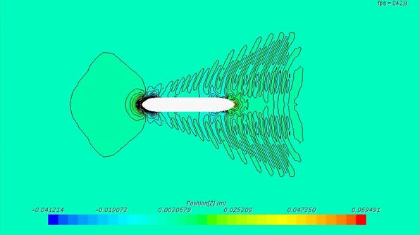
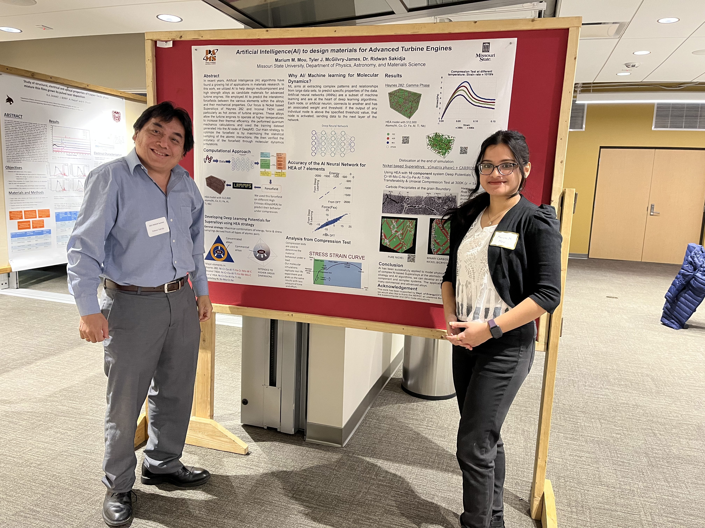
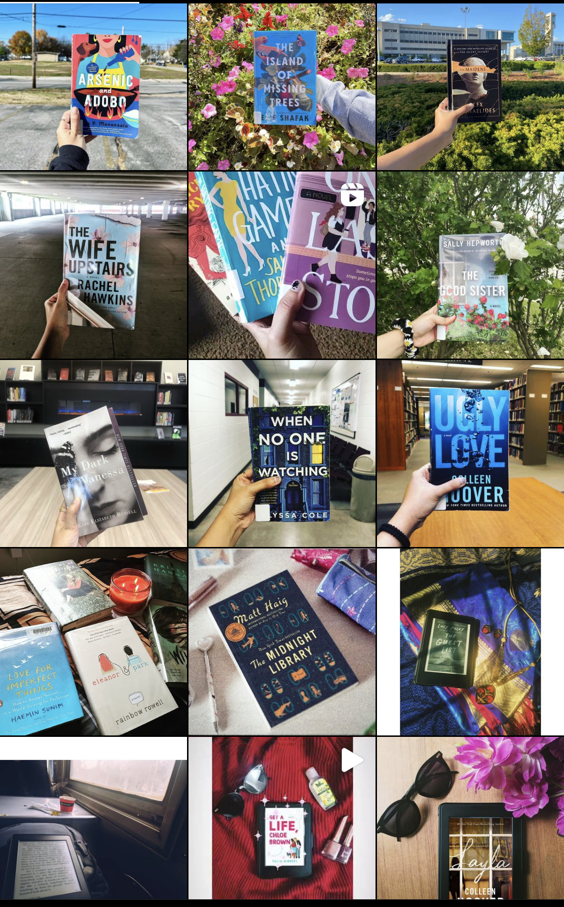
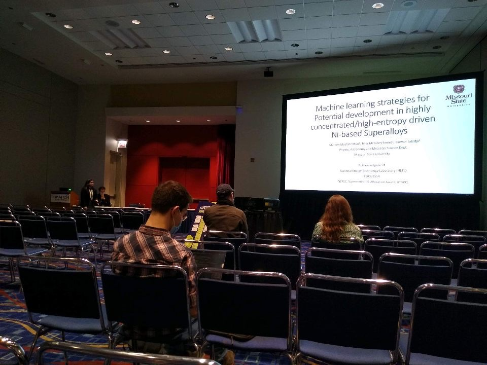
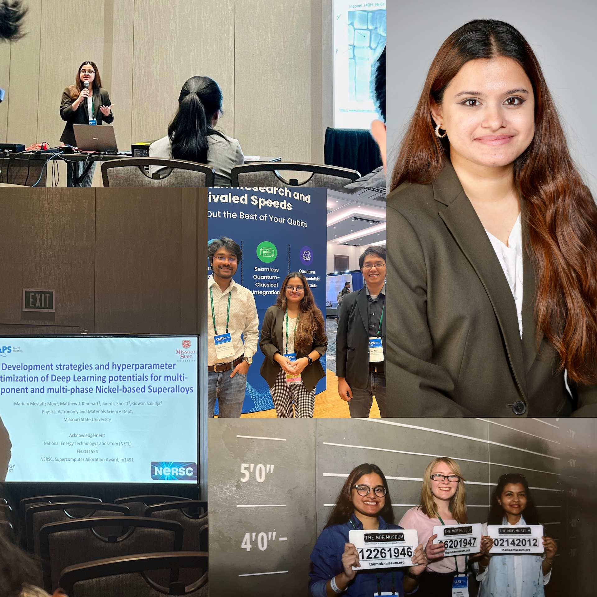

Hey, I'm
Marium M. Mou
I am a Graduate Student, doing Master's in Materials Science.
Hard work, sincerity and promptness - are the 3 things you can expect from me regarding any project.
If you want to know more about my academic life and hobbies, navigate below!

For my master's thesis, I am trying to develop Deep Learning interatomic potentials to model a multiphase and multi-components system of Ni-based Superalloys. I am in the process of utilizing invariant scalar-based and/or equivariant, tensor-based neural network (NN) approach. For the training and validation sets, I employed the trajectory results from the ab-initio molecular dynamics (AIMD) and ground state DFT calculations including the energy, force, and virial database from a highly diverse compositions, temperatures and pressures following a "High Entropy Strategy." To optimize the hyperparameters, I planning to use a series of machine learning (ML) algorithms to lower the RMSE of the force components and then compare the accuracy of both the potentials developed using the two types of Deep Learning potentials through a variety of large-scale molecular dynamics (MD) simulations.

Finite volume-based commercial code STARCCM+ was
used to predict the calm water resistance, sinkage, trim of JBC and to analysis flow around the hull.
Present numerical results were compared with the available experimental results, which show very good
consistency between the two results. Additionally, a Verification and Validation (V&V) procedure is
applied to the resistance results in order to assess the uncertainties and numerical errors.
Education & Work Experience
Jun 2021-Present
Missouri State University
Master's in Materials Science(CGPA: 3.96/4.00 after 3rd semester)
Physics, Astronomy and Materials Science Department.
Feb 2016-Feb 2021
Bangladesh University of Engineering & Technology (BUET)
BSc in Naval Architecture and Marine Engineering.
Dhaka, Bangladesh(CGPA: 3.74/4.00)
Merit Position: 3rd out of 57 students
Work Experience
#Graduate Teaching Assistant of PHY-124 Lab(Jan, 2022 - Present)
#Graduate Research Assistant[(June,2022-July,2022);(June, 2021 - Dec,2021)]
#Computational Tools: LAMMPS,Quantum Espresso, VASP, ALAMODE
#Visualization Software : OVITO, VESTA, OriginPro, Visual Molecular Dynamic (VMD), TOPAS
#Deep Learning (working with DeePMD-Kit, Allegro, SNAP currently)
#Data Analysis Tools: SQL, Tableau, Microsoft Excel
#Programming Languages: Python,C++,Fortran
#Computer Aided Design : AutoCAD, Rhinoceros
#CFD Simulation Software : StarCCM+, Pointwise
#Technical Skills : Fluid Mechanics, Ship design and drawing

#Won First Runner Up Prize for poster titled "Artificial Intelligence(AI) to design materials for Advanced Turbine Engines" at MOCAP Annual Summit Poster Presentation Competition (Feb 2022).
#I have been awarded with the
BSTF travel grant in 2022.
#Achieved Board Scholarship 6 times, Dean’s list scholarship 1 time, University Merit Scholarship 4 times and University Stipend 1 time
#Founding member of Covid-19 general awareness APP “Obogoto”
#Winner of the ‘NAME DEPARTMENT WOMEN’S BADMINTON TOURNAMENT 2019’

"We read to know we are not alone" -- Wiiliam Nicholson
I almost read every popular book during my childhood, but as I grew older my obsession shifted to social media more almost destroying my reading habit. Luckily, I was able to pick up my reading habit from 2019. To me, fictional books of thriller, romance genre give me a much needed escape from my monotonous life.
Feel free to ask me anything about books and all.
I spent Summer 2022 learning Data visualization and this holds all my tableu dashboard
3 / 4

It was thrilling to present my research work at the APS March Meeting'22.
4 / 4

APS March 2023 in Las Vegas. Also I got a free headshot from there.